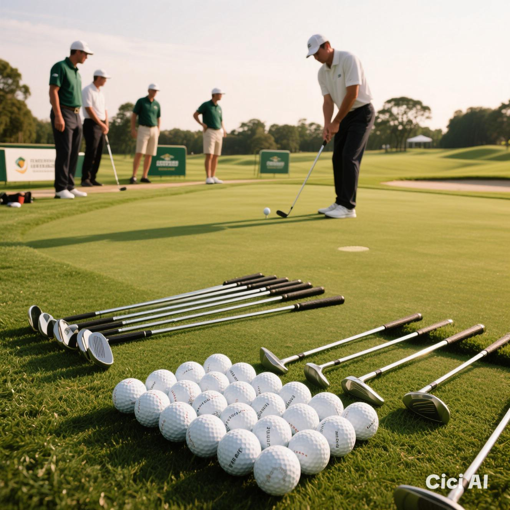
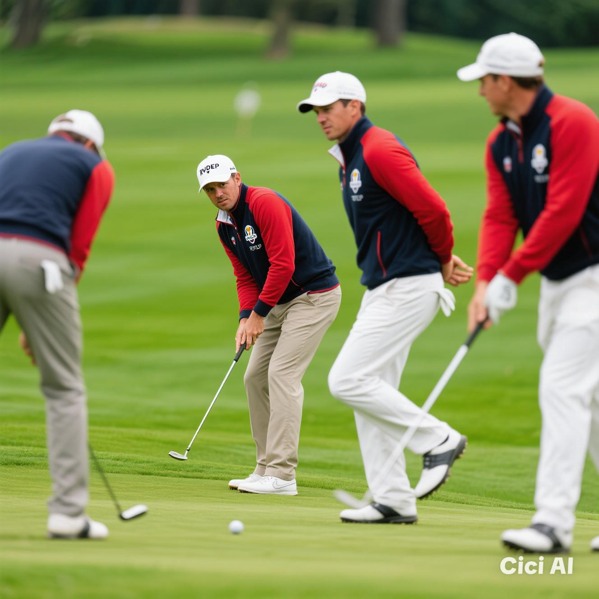
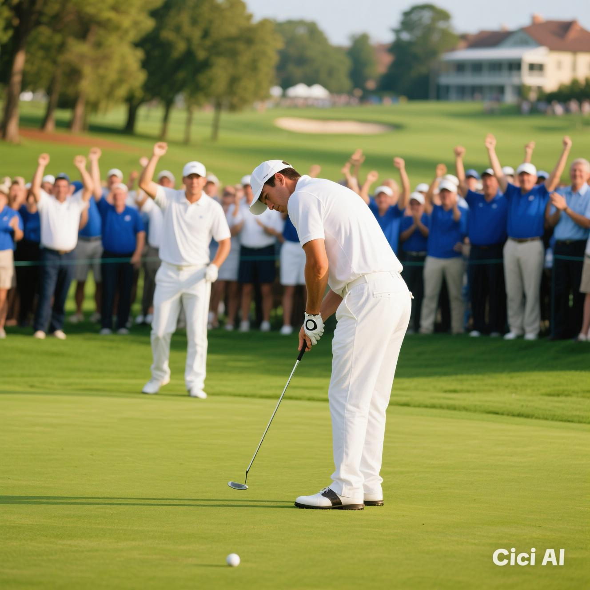

EVENTS
Month 3: Green Glory
- Overall Goal: Showcase golf skills in friendly competitions and celebrate achievements.

- Week 9: Tournament Tune-Up
- Goal: Fine-tune all aspects of the game in preparation for club tournaments.

- Week 10: Ryder Cup Ready
- Goal: Practice teamwork and strategy in Ryder Cup-style team matches.

- Week 11: Club Championship Challenge
- Goal: Compete in the club championship to test skills and vie for the title.
- Week 12: Awards and Aces
- Goal: Celebrate achievements, recognize outstanding performances, and foster a sense of community.
back